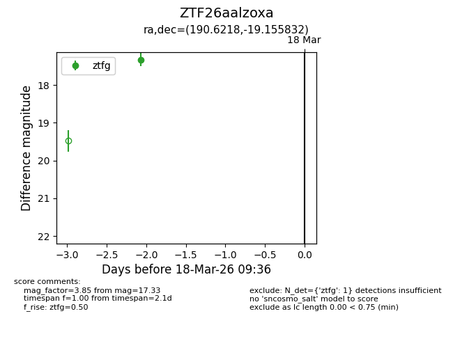
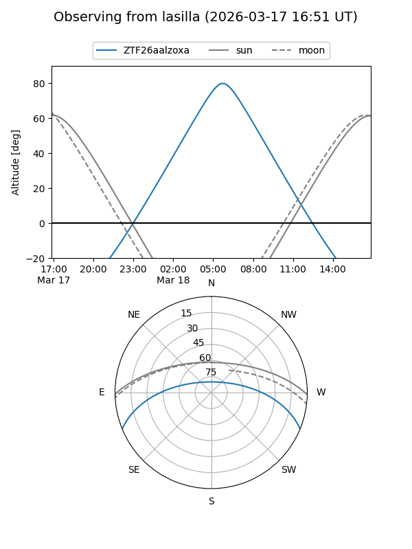
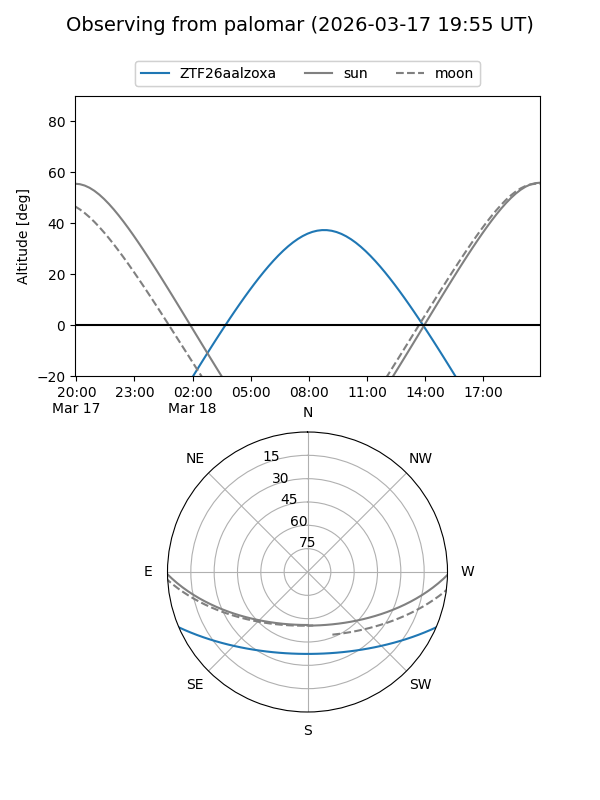

ZTF26aalzoxa
Target ZTF26aalzoxa at 2026-03-18 09:38
Aliases and brokers:
FINK: link
Lasair: link
ALeRCE: link
alt names
ZTF26aalzoxa (ztf,fink_ztf)
Coordinates:
equatorial (ra, dec) = 190.6218,-19.15583
equatorial (HMS+DMS) = 12:42:29.23,-19:09:21.00
galactic (l, b) = (300.0093,+43.66512)
Flags:
Photometry:
last ztfg=17.33
1 ztfg detections
Lightcurve

Visibility


Additional plots